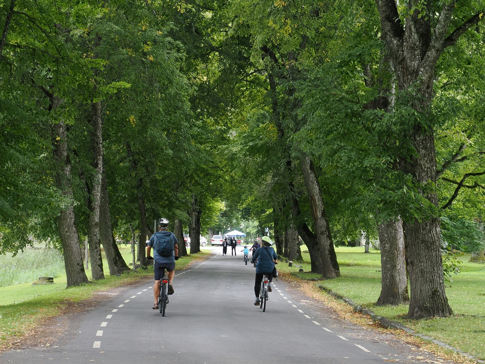
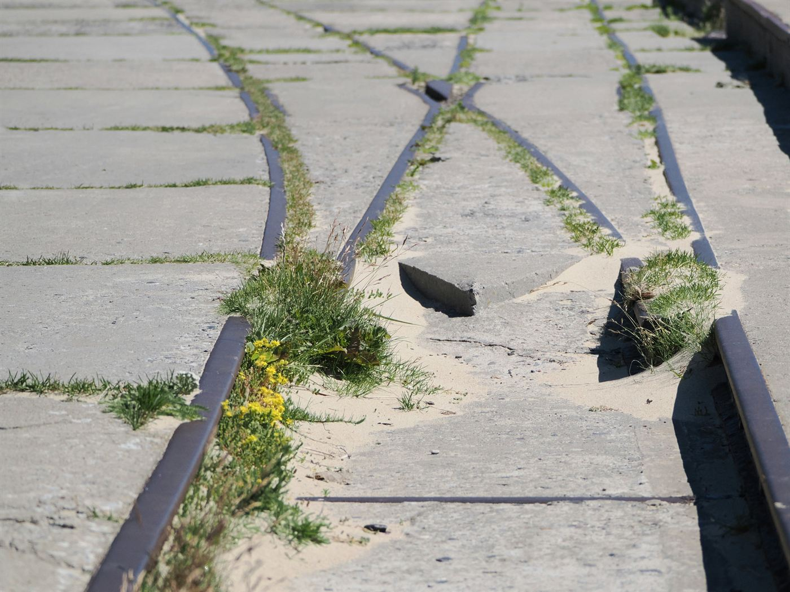

lihtneKruusatee mööda mereäärt
- pikkus 12 km
- aeg 3 h
- maa kruus
Tasane ja lai tee, kus mahub ka rattaga sõitma. Hommikul on vastutuul, õhtul on vaikus.
matkad · Eesti · välismaal
Kirjutan siia üles rajad, mida ise käisin: kui kaua läks, mida nägid, kas tasus minna. Ilma ilustamata ja ilma „imelise elamuse“ sõnadeta.

Rajad
Kõik kolm on läbitavad tavalise jalgsiminekuga. Vaja läheb häid jalanõusid, veepudelit ja natuke kannatust.

lihtneTasane ja lai tee, kus mahub ka rattaga sõitma. Hommikul on vastutuul, õhtul on vaikus.

keskmineLühike, aga terav. Astmed on libedad ka kuival ajal — vihma järel tasub tulla teisele poole mäge.
 hooajaline
hooajaline
Mõttetu ilus juunis ja juuli alguses. Augustis on kõik juba kollane ja siis on rada lihtsalt rada.
Päevik

Plaanisin kaheksa kilomeetrit ja kõndisin kaksteist, sest metsas läks üks ristmik valeks. Ei olnud hullu — tee viis välja samasse kohta, ainult teise nurga alt.
Kõige rohkem meeldis mulle see, et keegi ei rääkinud. Mitte üks sõna kaheksa kilomeetri jooksul.

Rada läheb läbi karjamaa ja värav tuleb enda järel kinni panna. See on kirjas igal pool, aga ikka unustab keegi. Sel korral unustasin mina.
Lehmad vaatasid mind nii, nagu oleksin neile midagi võlgu. Vabandasin ja panin värava kinni.
Mõnikord ei ole vaja metsa ega mäge. Piisab kolmest kilomeetrist mere ääres enne tööd — ja päev on juba teine. Kirjutan selle üles, et mitte unustada: matk ei pea olema suur, et lugeda.
Enne minekut
Klõpsa küsimusel ja vastus avaneb. Teine klõps paneb selle jälle kinni.
Jah, kui lapsed on harjunud kõndima. Kruusatee ja niiduring sobivad ka väiksematele, kivised astmed mitte — need on kõrged ja libedad.
Iga raja juures on kirjas parkimiskoht ja esimene tähis. Kui tahad kaarti, kirjuta mulle ja saadan GPX-faili.
Tavalised matkajalatsid on piisavad. Kiviste astmete jaoks tasub valida paksema tallaga jalanõu, niiduringil sobib ka tavaline toss.
Enamikul radadest jah. Karjamaal käib koer rihma otsas ja värav tuleb enda järel kinni panna.
Kontakt
Kui tahad mõnda rada täpsemalt teada või on sul endal mõni, mida peaksin käima — kirjuta.